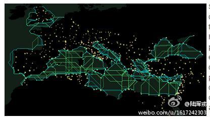
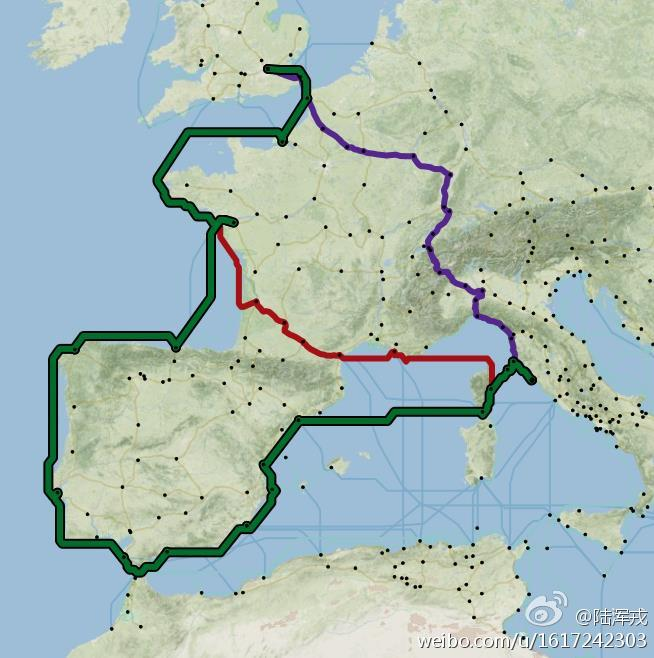
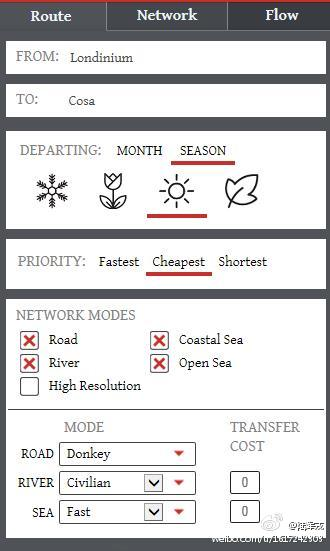
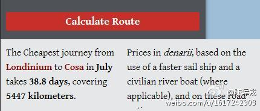

Repost@陆浑戎:高大上的#穿越#，斯坦福大学，#Orbis: The Stanford Geospatial Network Model of the Roman World#，让使用者能够体验在罗马帝国旅行的种种细节。该系统融合了跨三大洲的罗马帝国的城镇、道路、河流、关隘、区划等信息，直观而详细地展示帝国内两地之间的旅行路线和费用，网页链接 
为什么报道要用化名？又不是未成年。编故事吧？ //@王风风风9:这个真心不怨这个副总，怨只怨通胀太厉害了。@新浪财经:【国企副总带着40万公款逃亡11年 当起餐馆服务员】41岁的黄华(化名)，原是江苏启东某国企副总经理。12年前，他挪用公款，亏空巨大，为逃避打击，他又携40万元公款潜逃11年之久。逃亡生涯并不好过，他先被好友骗，之后做生意又失败，最后沦为一家餐馆的服务员，每月工资仅1000多。国企副总带着40万公款逃亡11年 当起餐馆服务员
 网页链接
网页链接